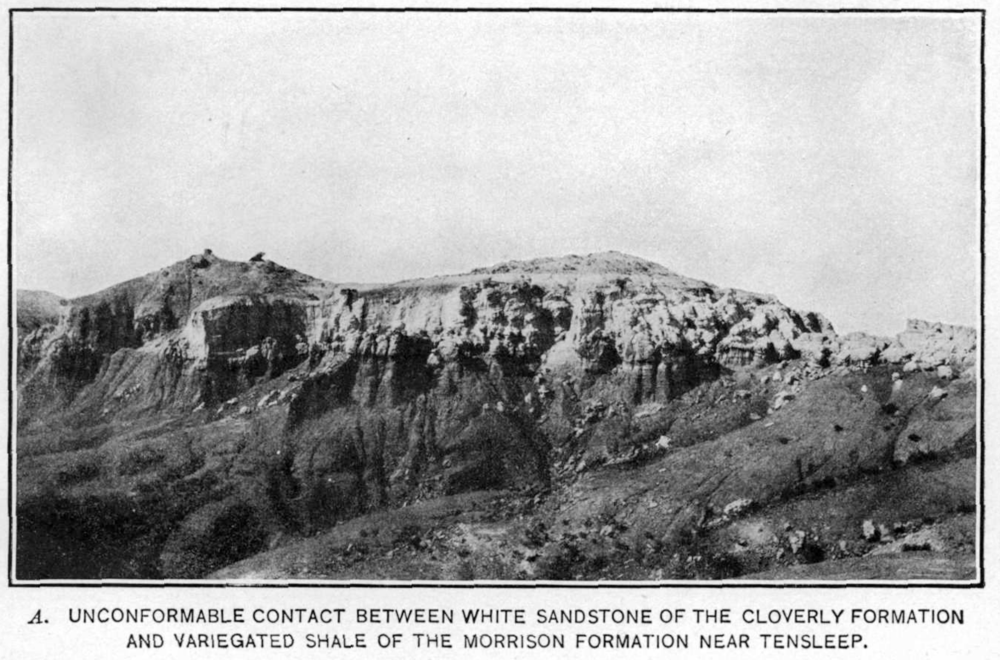
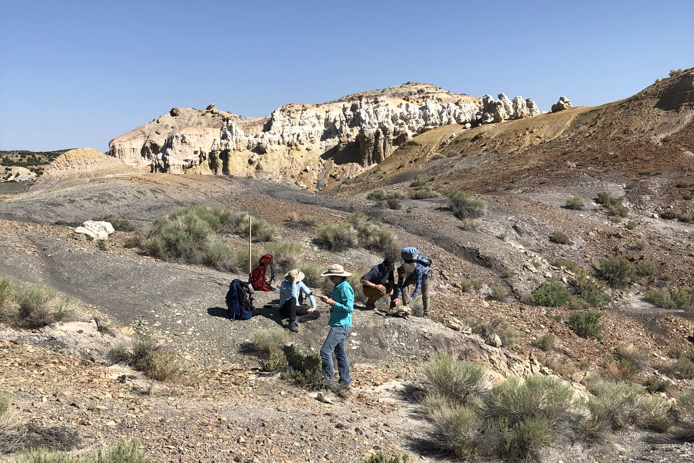
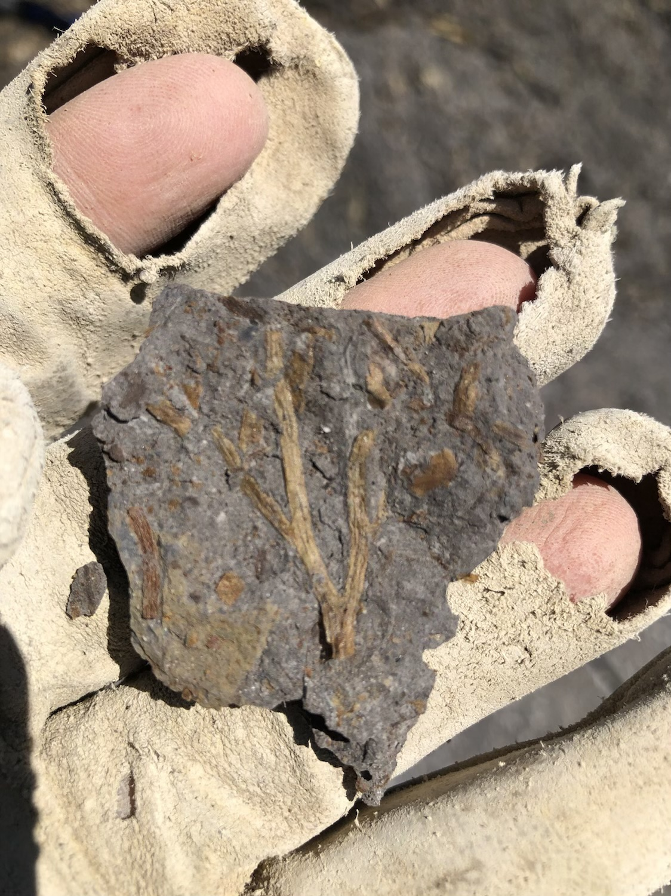
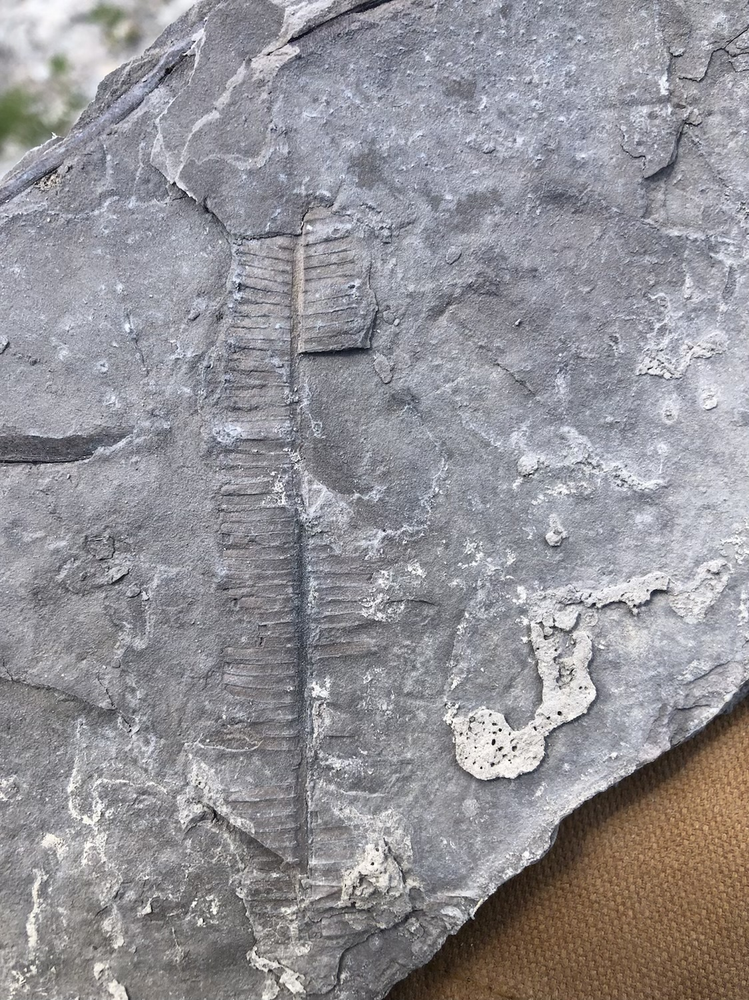
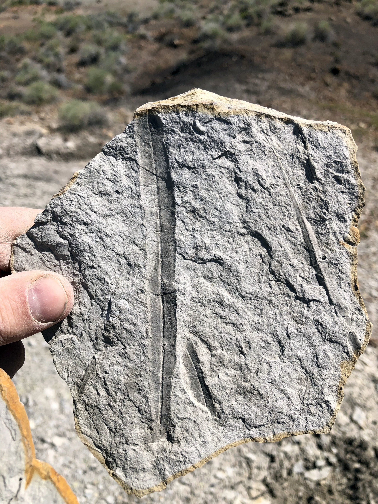

2021 Dispatch from the field #3
The goal this summer was to collect fossils and geologic data from a Cretaceous lake deposit so that we can estimate its age and reconstruct the paleocommunity. Fossils from this area were first described by Knowlton in 1916, and the outcrop appears in Hewitt and Lupton 1917

Although they called the variegated shales Morrison, we now know the boundary is somewhere in the shales, and the fossils that Knowlton collected are from the Cloverly Fm. Moberly (1960) called the Cloverly Shales below the white sandstone the lower Little Sheep Mudstone Member

On Wednesday we found leaves from a layer with abundant plant cuticle fragments that blow away in the wind as you split the shale open. After some time we managed to collect larger pieces showing dissection patterns that I think are characteristic of Czekanowskia, a Mesozoic Ginkgo relative.

Thursday morning we measured the thickness of the Cloverly Formation and observed the Morrison–Cloverly contact. In some areas the bottom of the Cloverly is marked by a the conglomerate unit shown above, but here it is less obvious, somewhere above the last redbed of the Morrison and below the plant-bearing shale with barite nodules.

In the afternoon we planned to collect more plants from the lake (below are "Zamites" arcticus and Nilsonia nigracollensis), but just as we were about to begin we heard approaching thunder. We hoofed it back to the car and went to Ten Sleep for milkshakes at a place called Dirty Sally's, where we could watch the rain go by. They are famous for their huckleberry milkshakes.


After a while it became clear that the risk of lightning in our area would not subside for a few hours, so I decided to drive to another area that I wanted to explore near Thermopolis. Unfortunately, by the time we got to Thermopolis, thunderstorms were popping up there too. After waiting around we tried again, but some locals were using the area for target practice, so we decided to return to camp and start on dinner for everyone.
Friday and Saturday we spent more time examining the Morrison–Cloverly contact on our way to collect more plants from the Cretaceous lake unit. We examined dozens of blocks with hundreds of leaf fragments and collected the less common ones. On Saturday the combination of warmer temperatures and the dark gray shale made fieldwork unbearably hot in the afternoon, so we finished early. We drove up Ten Sleep Canyon to Meadowlark Lake to cool off in the mountains before heading back to camp.